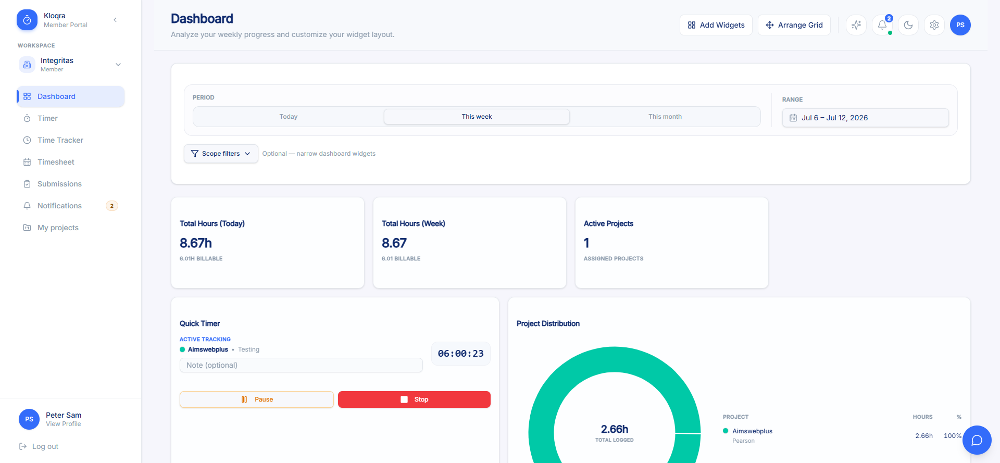
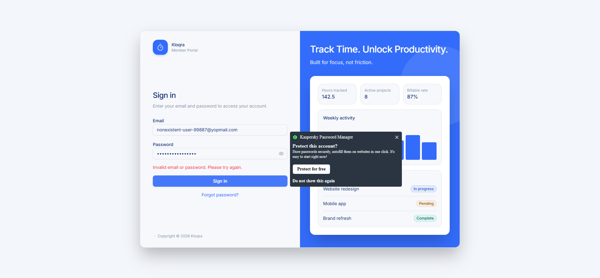
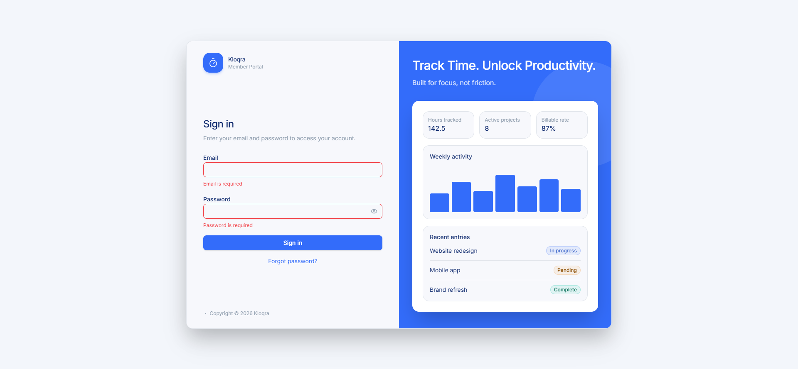
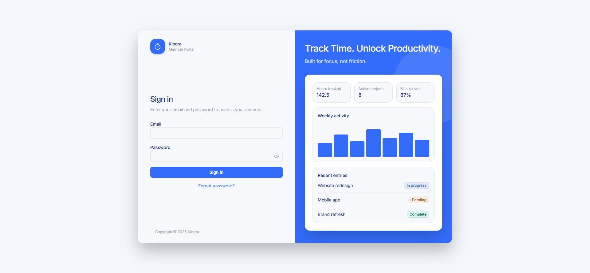
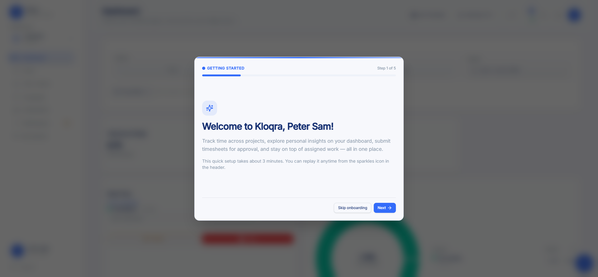
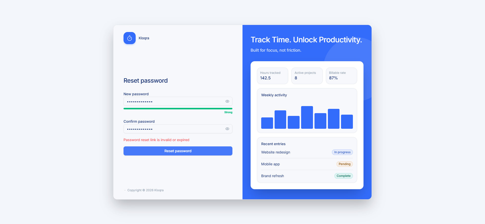
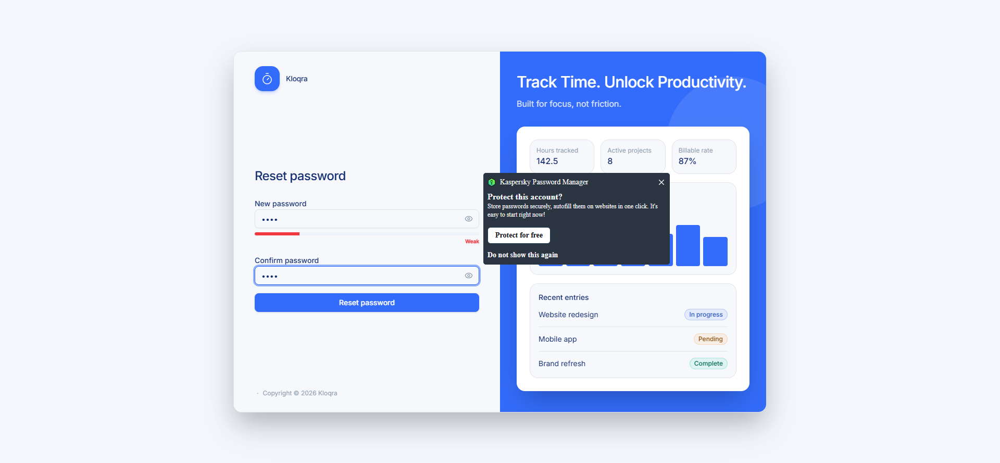

/login (known gap)



End-to-end QA workflow: acceptance criteria → test plan → exploratory testing → automation → self-healing execution → defect logging
This module covers the Login screen, Forgot Password request flow, Reset Password flow, and (newly in scope this pass)
post-login Workspace Selection / routing, against the Client (Member) app. Acceptance criteria are sourced from
docs/qa/user_stories/acceptance-criteria-login-forgot-password.md (29 ACs, derived from
docs/architecture/AUTH.md, MULTI_DEVICE_SESSIONS.md, TENANT_RBAC.md, and GitHub
#561 /
#562).
The test plan (specs_qa/login-forgot-password.md) maps all 29 ACs to 40 scenario IDs (39 independently executable).
| Artifact | Path |
|---|---|
| Acceptance criteria (29 ACs) | docs/qa/user_stories/acceptance-criteria-login-forgot-password.md |
| Test plan (40 scenarios / 8 feature areas) | specs_qa/login-forgot-password.md |
| Exploratory results | specs_qa/login-forgot-password-exploratory-results.md |
| Exploratory screenshots | specs_qa/exploratory/login-forgot-password/ (24 screenshots) |
| Automation suite (pages + tests) | Test/login-forgot-password/ (4 page objects, 4 spec files, 24 tests) |
| Healing log / run history | Test/login-forgot-password/HEALING_LOG.md |
Executed 2026-07-09 via Playwright MCP (real browser, Chromium) against the live production Client app. Of the plan's
39 independently executable scenarios, 19 were driven live and passed; the remaining 20 could not be
exercised because the seeded test account (peter123@yopmail.com) cannot produce the required precondition
state (see section 7 for the full list and reasons — nothing is hidden).
/auth/login POSTs). Clearing cookies and
rerunning produced clean, consistent results, which are what's reported below. The confound itself is what surfaced
Finding 1 (KAN-10) below.
/login, looks correct), navigating
directly to /dashboard re-authenticates silently via a background POST /auth/refresh → 201 —
the user lands back on the fully authenticated dashboard without re-entering credentials. In 2 of 3 reproductions the
DELETE /auth/logout call itself never resolved. Filed as KAN-10 (Critical severity / High priority). See Defect Log.
/auth/login firing
twice for a single click. Not reproduced on clean cookies. Plausibly connected to Finding 1's stale-but-valid refresh
cookie combined with an over-broad refresh-and-retry interceptor. Not independently filed as its own ticket —
recommended to track alongside KAN-10.
specs_qa/exploratory/login-forgot-password/)



/login (known gap)


| Feature area | Executed live | Not verified | Result |
|---|---|---|---|
| 1. Login — Core Authentication | LGN-01, 02, 03, 06 (partial) | LGN-04, 05 | All executed passed |
| 2. Login — Special Account States | — | LGN-08, 09, 10, 11 | Fully blocked |
| 3. Login — Screen Composition & Validation | LGN-12, 13, 14, 15, 16, 17, 18 | — | All passed (3 confirm known copy/redirect gaps, not new defects) |
| 4. Workspace Selection & Routing | WKS-01, WKS-05 (partial) | WKS-02, 03, 04 | Executed passed |
| 5. Session & Workspace Context | LGN-19 | LGN-20, 21, 22, 23, 24 | Executed passed |
| 6. Forgot Password — Request Reset Link | FPW-01, 02 | FPW-03 | All executed passed |
| 7. Forgot Password — Reset Password | FPW-05, 07, 10 | FPW-04, 06, 08, 09 | All executed passed |
| 8. Platform Scope Isolation | — | FPW-11 | Fully blocked (different app) |
Standalone Playwright suite at Test/login-forgot-password/ (Page Object Model, deliberately outside the
pnpm workspace — targets the deployed production app directly, no local dev server). 4 page objects, 4 spec files,
24 automated tests total.
pages/login.page.ts
pages/forgot-password.page.ts
pages/reset-password.page.ts
pages/dashboard.page.ts
| Spec file | Tests | Covers | ACs |
|---|---|---|---|
tests/login.spec.ts |
11 | Successful login, wrong-password/unknown-email generic errors, screen composition, empty/partial required-field validation, show/hide password, forgot-password link nav, single-click no-double-submit, Enter+click double-submit regression, logout clears local tokens | AC-1, AC-2, AC-14, AC-15, AC-21 (nav) |
tests/forgot-password.spec.ts |
7 | Registered/unregistered email generic confirmation, "back to sign in" nav, invalid/expired reset token rejected, weak-password client-side block, single-click reset no-double-submit, Enter+click double-submit regression on reset-password | AC-21, AC-24, AC-26, AC-13 |
tests/logout-security.spec.ts |
1 | New — LGN-40: after logout, a protected route must not silently re-authenticate (proves KAN-10) | AC-8 / AC-9 (session termination expectation) |
tests/workspace-session.spec.ts |
5 | Single-workspace bypass of Workspace Selection, workspace context in sidebar, Member-only nav restriction, workspace switcher dropdown opens, unauthenticated redirect from a protected route | AC-17, AC-7, AC-12, AC-20, AC-16 |
This suite automates the 19 scenarios confirmed live-walkable in the 2026-07-09 exploratory pass plus the new LGN-40 regression (20 total scenario intents across 24 test cases — some scenarios have both a positive and a defect-regression test). The 20 scenarios needing unavailable test data (2FA, forced password change, unverified email, multi-workspace, mailbox access, second device/browser, platform scope) are intentionally **not** automated — same environment limitation as exploratory testing, not a test-authoring gap. See section 7.
Run 1 (6 passed / 4 failed / 14 not run) failed purely due to a Windows worker-process access-violation crash
(code=3221225794) traced to host memory pressure (~2.1–3.3GB free of 16GB, many concurrent
chrome.exe processes) — not a product or test defect. Run 2 hung and was abandoned.
Run 3 isolated re-runs confirmed the crashes were transient (both previously "failed" tests passed cleanly in
isolation) and surfaced the 3 real results below with clean signal. Run 4 — the full 24-test suite in one clean pass —
is the authoritative final result: 21 passed, 3 failed.
logout-security.spec.ts:33 — [DEFECT][LGN-40] Logout does not terminate the session server-side
Assertion: after logout, navigating to /dashboard must redirect to /login. Actual: the
dashboard renders again via a silent POST /auth/refresh. Confirmed real defect, filed as
KAN-10 — Critical severity / High priority, screenshot attached. Left red intentionally — this test is the automated proof the defect exists and stays caught.
login.spec.ts:122 — [defect regression] Enter-then-click double-submits /auth/login
Assertion: pressing Enter in the password field then clicking "Sign in" should fire exactly one
/auth/login request. Actual: two distinct requests fire. This re-confirms the pre-existing
KAN-8 (filed 2026-07-08, still open/Backlog) — unchanged, still valid. Left red intentionally.
forgot-password.spec.ts:78 — Enter-submit on reset-password with an invalid token — UNRESOLVED DISCREPANCY, not a confirmed new defect
The automated test times out (45s) waiting for the "Reset password" button after an Enter keypress, because the
automated browser has been redirected to /login — the button genuinely no longer
exists on the page. Reproduced identically on 2 separate automated runs.
This contradicts KAN-8's original 2026-07-08 description of this same interaction, which describes
the form staying on /reset-password with an inline "Password reset link is invalid or expired" error and
a double POST /auth/reset-password — i.e., no redirect at all. A manual re-drive of the identical flow
via Playwright MCP this session did reproduce KAN-8's original description (stayed on /reset-password,
inline error, button still present) — but the isolated automated test, run twice, consistently shows the
redirect-to-/login behavior instead.
Presented exactly as flagged — deliberately not resolved either way. Two genuinely different behaviors have now been observed for the same interaction by two different methods, and there isn't enough information to say confidently which is "the bug" and which is stale. Possibilities: (a) a real product change since 2026-07-08 introduced the redirect, making KAN-8's description stale and this arguably a new, likely worse regression (Enter-key submission ejecting the user from the recovery flow entirely instead of double-submitting); or (b) a session/cookie-state difference between a fresh isolated automated browser context and an already-used interactive one that happens to route differently. This has been added as a comment on KAN-8 recommending a human re-verify this specific case (Enter key, invalid token, freshly cleared cookies) before deciding whether to update KAN-8 or file a new ticket. No new Jira ticket was filed for this item.
| Ticket | Summary | Severity / Priority | Status | Origin |
|---|---|---|---|---|
| KAN-8 | Login and Reset Password forms double-submit when Enter is pressed then the submit button is clicked | Critical / High | Backlog (pre-existing, filed 2026-07-08) | Re-confirmed this session on the Login form via login.spec.ts:122. Updated this session with a
2026-07-09 re-verification comment documenting the unresolved Reset-Password discrepancy above (not silently resolved). |
| KAN-10 | Logout does not terminate the session server-side — a "logged out" account silently re-authenticates via token refresh | Critical / High | Backlog (newly filed this session) | Discovered during exploratory testing (Finding 1), reproduced 3× manually + confirmed via logout-security.spec.ts
automation. Screenshot attached (KAN-10-logout-security-failure.png). |
Every AC maps to at least one scenario; no orphan scenarios and no uncovered ACs in the plan. Status legend: Live-verified exploratory pass confirmed it live and it matches expected behavior (including cases that correctly reproduce an already-known, already-tracked copy/placement gap — not a new defect); Not verified precondition unavailable this session; Defect confirmed real defect open against this AC.
| AC | Title | Scenario(s) | Automated? | Status |
|---|---|---|---|---|
| AC-1 | Successful login | LGN-01 | Yes | Live-verified, passed |
| AC-2 | Invalid credentials (no enumeration) | LGN-02, LGN-03 | Yes | Live-verified, passed |
| AC-3 | Rate limiting on login | LGN-04 | No | Not verified — shared prod rate limiter, not hammered |
| AC-4 | Forced password change | LGN-08 | No | Not verified — no mustChangePassword account |
| AC-5 | Unverified email blocks login | LGN-09 | No | Not verified — no unverified-email account |
| AC-6 | 2FA (TOTP) challenge | LGN-10, LGN-11 | No | Not verified — no 2FA-enabled account |
| AC-7 | Workspace context on login | LGN-19, LGN-20 | Partial (LGN-19 yes) | LGN-19 live-verified / LGN-20 not verified — no workspace-less account |
| AC-8 | Multi-device/app login isolation | LGN-21 | No | Not verified — no second device/browser context |
| AC-9 | Stale workspace context after switch | LGN-22 | No | Not verified — needs multi-workspace + second device |
| AC-10 | Session/token refresh | LGN-23, LGN-24 | No | Not verified — can't safely force token expiry / timing |
| AC-11 | Origin/CSRF check in production | LGN-05 | No | Not verified — server-side check not triggerable from browser UI |
| AC-12 | Role-based post-login access | LGN-06 | Partial | Member side live-verified / Admin side not verified — no admin account |
| AC-13 | Password policy enforced | LGN-08, FPW-07 | Partial (FPW-07 yes) | FPW-07 live-verified / LGN-08 not verified |
| AC-14 | Login screen composition | LGN-12 | Yes | Live-verified — confirms known "Sign in" vs "Login" copy gap, not a new defect |
| AC-15 | Required-field validation on empty submit | LGN-13, LGN-14 | Yes | Live-verified — confirms known wording gap, not a new defect |
| AC-16 | Authenticated users redirected from Login page | LGN-15, LGN-16 | Yes | Live-verified — confirms known gap: only unauthenticated→protected-route direction works, not the reverse |
| AC-17 | Post-login workspace redirect | WKS-01, WKS-02 | Partial (WKS-01 yes) | WKS-01 live-verified / WKS-02 not verified — no multi-workspace account |
| AC-18 | Workspace Selection card display | WKS-03 | No | Not verified — no multi-workspace account; re-verify GitHub #644 "project count" fix on next pass |
| AC-19 | Selecting a workspace | WKS-04 | No | Not verified — no multi-workspace account |
| AC-20 | Switching workspaces without logging out | WKS-05 | Partial | Switcher location live-verified (confirms known sidebar-vs-top-nav placement gap) / Actual switch action not verified — no multi-workspace account |
| AC-21 | Request a password reset link | FPW-01, FPW-02 | Yes | Live-verified, passed |
| AC-22 | Rate limiting on forgot-password | FPW-03 | No | Not verified — shared prod rate limiter, not hammered |
| AC-23 | Reset password with a valid token | FPW-04 | No | Not verified — no mailbox access for a real token |
| AC-24 | Reset password with invalid/expired token | FPW-05 | Yes | Live-verified, passed |
| AC-25 | Reset token is single-use | FPW-06 | No | Not verified — depends on FPW-04 (no mailbox access) |
| AC-26 | New password must meet policy | FPW-07 | Yes | Live-verified, passed |
| AC-27 | Rate limiting on reset-password | FPW-08 | No | Not verified — shared prod rate limiter, not hammered |
| AC-28 | Platform (superadmin) scope isolation | FPW-11 | No | Not verified — belongs to the separate Platform Admin app |
| AC-29 | No session issued directly from reset | FPW-09 | No | Not verified — depends on FPW-04 (no mailbox access) |
Additionally, outside the original 29-AC/40-scenario plan: LGN-40 (logout session termination) was
added this session as a direct result of exploratory Finding 1, automated in logout-security.spec.ts, and
is the confirmed KAN-10 defect — it fails intentionally as proof the defect exists.
These 20 scenarios were not silently skipped — each requires an account/environment state the single
seeded Member test account (peter123@yopmail.com, single-workspace, 2FA-disabled, verified, no forced
password change) cannot produce. Listed here explicitly per the coverage-gap requirement:
| Missing precondition | Scenarios blocked |
|---|---|
| 2FA/TOTP-enabled account + authenticator access | LGN-10, LGN-11 |
Forced-password-change (mustChangePassword=true) account | LGN-08 |
| Unverified-email account | LGN-09 |
| Second workspace membership (multi-workspace account) | WKS-02, WKS-03, WKS-04, LGN-22 (also needs 2nd device) |
| Mailbox / inbox access to retrieve a real reset token | FPW-04, FPW-06, FPW-09 |
| Second device / second browser context | LGN-21, LGN-22 (also needs multi-workspace) |
| Platform-scope app (different deployment entirely — Platform Admin, not Client) | FPW-11 |
| Admin-role account for RBAC comparison | LGN-06 (Admin half only — Member half live-verified) |
| Workspace-less account (zero memberships) | LGN-20 |
| Shared-production rate limiter — deliberately not hammered | LGN-04, LGN-05, FPW-03, FPW-08 |
| Cannot safely force/wait access-token expiry or control concurrent request timing | LGN-23, LGN-24 |
Recommendation carried forward from the test plan and healing log: if any of TD-2 through TD-8 (see
specs_qa/login-forgot-password.md test-data table) become available in a future run, re-execute the
corresponding scenarios live and update both the exploratory results and automation suite.